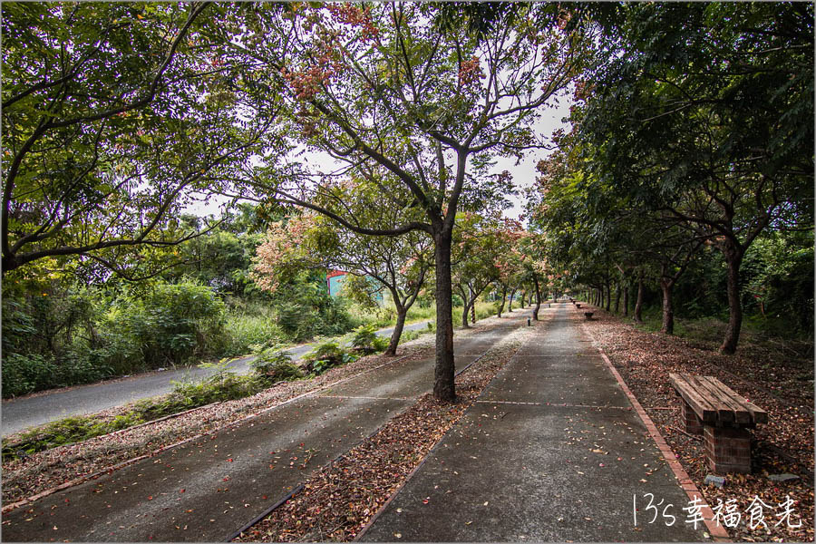

品皇咖啡觀光工廠 三界埔社區 水上保鹿自行車道
品皇咖啡觀光工廠 品皇咖啡觀光工廠是台灣少數以「咖啡」為展覽主題的觀光工廠，在Google上有3600多則評論，還能擁有4.3分的好評價，全廠各個參觀點都設有神秘、有趣的AR虛擬實境小遊戲，歡迎大家參觀時帶著手機，與品皇一同探索咖啡的美味世界，讓你可以學習如何用杯測懂咖啡、如何手沖咖啡，用咖啡的香味傳達心意，也為生活帶來儀式感。館 區為：「咖啡歷史文化館」、「簡報室」、「咖啡原料與收成」、「企業歷史與文物展示區」、「研發室」、「工廠製程區」、「展售中心」、「體驗教室」、「咖啡五感體驗區」，從咖啡的品種、構造、時下最流行的關鍵字及咖啡豆的魔幻數字都一一介紹，能讓你來一趟大增咖啡知識喔！
地址：嘉義縣水上鄉155號
電話：(05)371-3299三界埔社區
三界埔社區是個典型的農業鄉村，環境幽雅，有著「綠化鄉村」的美稱，村內名勝史蹟與生態景點有：三祝宮、協安宮、竹圍仔、田中央聚落、傳統三合院、煙窯、赤蘭溪地下導水工程紀念碑、月光森林藥用植物園區、嘉義縣林業苗圃、吊橋頭客家聚落等，為臺灣具有原始文化古蹟之寶城。
三界埔因地理環境適宜，氣溫土壤亦頗為適合，所生產種植的菸草品質甚佳，是嘉義縣菸葉重要產區之一，國姓村興建菸窯大師傅詹火茂表示：「三界埔菸窯在最繁盛時曾達一百多座。」，相當有歷史意義。除此之外，紅骨仙草一直以來是這裡的特色作物之一，每年花季時，浪漫的紫色仙草花海，也是一大亮點喔！
地址：嘉義縣水上鄉top
水上保鹿自行車道
保鹿自行車道總長18公里，沿途更可看到油菜花田、菠菜、西瓜、玉米等在地農產品，盡覽水上、鹿草、義竹之美，其自然恬靜的田園風光盡收眼底，可讓人感受農村生活悠然自在，更可順遊周邊景點，像是：鹿東社區、安溪城隍廟、義竹車站、翁清江宅等，相當愜意。其中義竹車站不僅不僅是載運甘蔗到鹽水岸內糖廠的主要車站，也是義竹地方學子前往鹽水、新營、嘉義、臺南等地區求學的唯一車站，相當有地理位置上的意義，而今，車站在重新整理後，已成為當地知名景點，千萬別錯過！
地址：嘉義縣水上鄉163縣道
營業時間：24 小時營業top